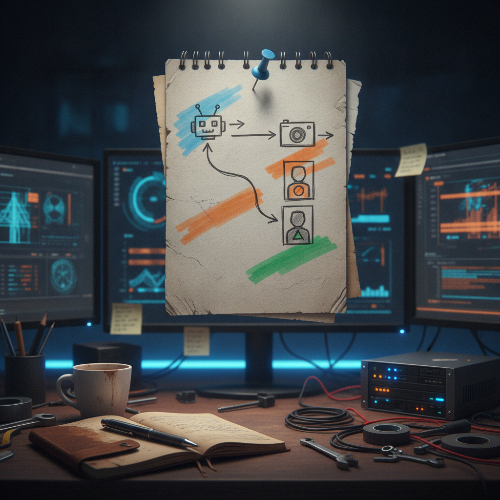

Why a meme coin leaderboard caught my attention
Most of the bookmarks I save are dense, technical, or tied to something with a roadmap. This one was neither. It was a single line and a screenshot, and it still made me stop scrolling.
What was bookmarked
@bytesandblocks posted that a leaderboard for a token called $pussy is now live inside the "tang" Discord, along with a screenshot ranking who is holding the most of it. There is no project site, contract address, or docs linked in the post itself, just the announcement and the image. Based on the source post, this looks like a community feature inside an existing Discord server rather than a standalone product launch.

Why it matters
Leaderboards are one of the oldest tricks in community building, and they show up constantly in crypto Discords for a simple reason: they turn something invisible, like a wallet balance, into something social and visible. Nobody can see your bag unless you show it, but a leaderboard does that automatically and turns holding into a small competition. That is a community building and dashboards-and-data pattern more than it is a tokenomics story, and it is worth paying attention to regardless of what the token itself is or does.
The practical breakdown
What it does: ranks members of a Discord by how much of a specific token they hold, at least at the moment the screenshot was taken.
Who it helps: communities that want a lightweight way to keep members engaged and checking back in, and members who like a bit of competitive fun around something they already hold.
What problem it solves: it gives a token, even a joke one, a reason to be checked and talked about instead of just sitting in a wallet.
What still needs work: the post does not say whether this board updates live, refreshes on a schedule, or is a manual snapshot someone posted. There is also no link to a contract or docs, so there is nothing here to verify about the token itself, its supply, or what backs it.
What I would test first: whether the board is powered by a bot pulling on-chain data automatically, or whether it is a manual screenshot someone posts periodically. That difference matters a lot if other communities want to copy the idea.
Rick's take
I like this kind of thing more than I probably should. A leaderboard is a dead simple mechanic and it works because people like to see their name near the top of something, even something silly. I have seen versions of this idea done well in Chia adjacent communities, where a bot tracks holders or activity and just posts an update, and it keeps a channel alive without anyone forcing conversation. If tang discord built something like that here, even around a joke token, that is a small, useful pattern worth noticing. The one thing I genuinely do not know is how the board is generated, since nothing in the post points to a bot, a contract, or a dashboard tool, so I have no idea how they wired it up.
What to watch next
I would keep an eye on whether this becomes a recurring fixture in the Discord or was a one-off screenshot for a laugh. If it sticks around and gets automated, it is a small, repeatable pattern other small communities could borrow, regardless of what the token behind it is worth.
Source and links
Source: X post by @bytesandblocks, https://x.com/i/web/status/2077125536929787971, retrieved on 2026-07-14. No external references (GitHub, docs, or project site) were included in the source post.